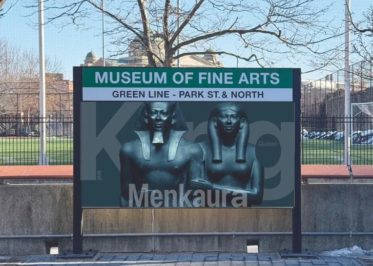
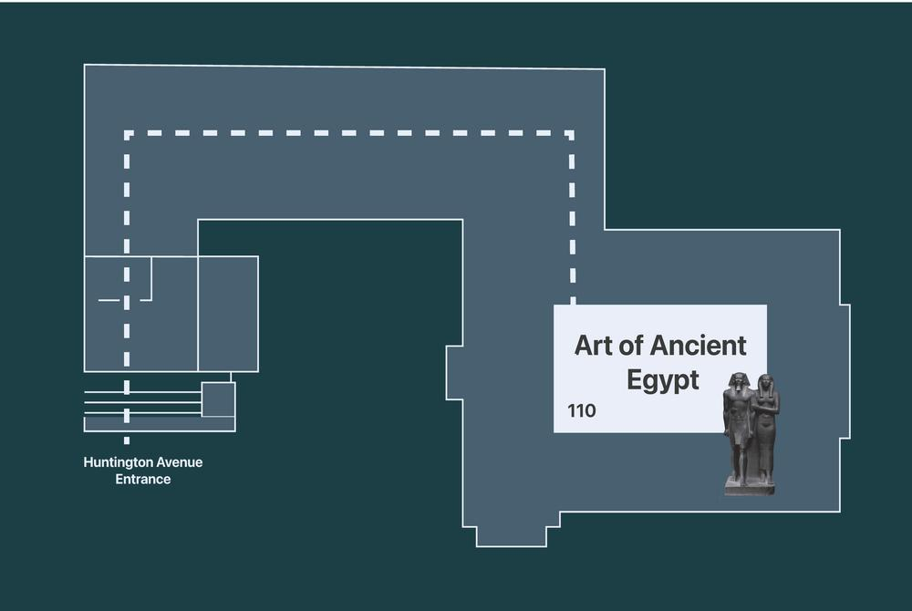
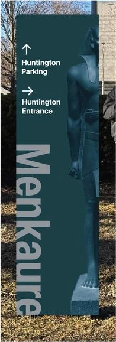
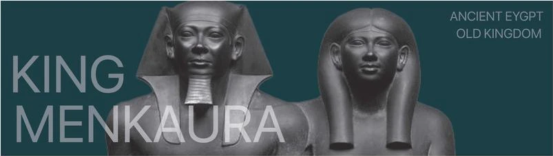
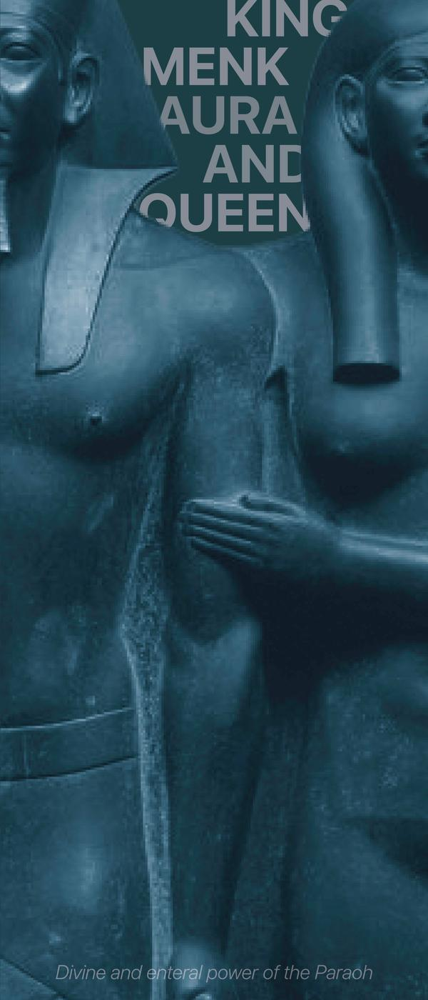
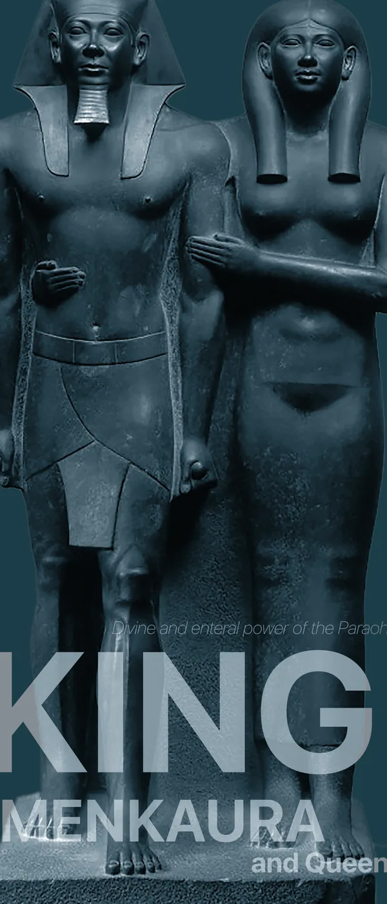

King Menkaura and Queen.
MFA wayfinding system
- Wayfinding
- Exhibition Design
- Poster

A wayfinding and exhibition system for King Menkaura and Queen at the MFA, colored by the statue’s greywacke stone and focused on a queen history often leaves out.
Process
- 01ResearchThe statue, its stone and story
- 02AnalyzeArtworks and the space
- 03WayfindingMap, signs and banner
- 04PostersExtend the identity
Research
Studying the piece
I visited the MFA, photographed the Old Kingdom galleries and focused on King Menkaura and Queen: a greywacke pair statue, about 4,500 years old, showing the king beside his queen.
Greywacke as the palette
The system’s dark teal and stone greys are drawn from the statue’s greywacke, so every piece feels cut from the same stone.
A pair, not a portrait
The queen embraces the king, yet history rarely names her. That imbalance became the project’s story.
From street to statue
I mapped how a visitor reaches the piece, from the Green Line stop to Gallery 110.
Palette sampled from greywacke: deep teal-black to weathered grey.
Wayfinding
From the street to the gallery
Each piece guides visitors one step closer to the statue.




Final design
Posters
A series that celebrates the pair’s closeness, and brings the often-overlooked queen into the frame alongside the king.

